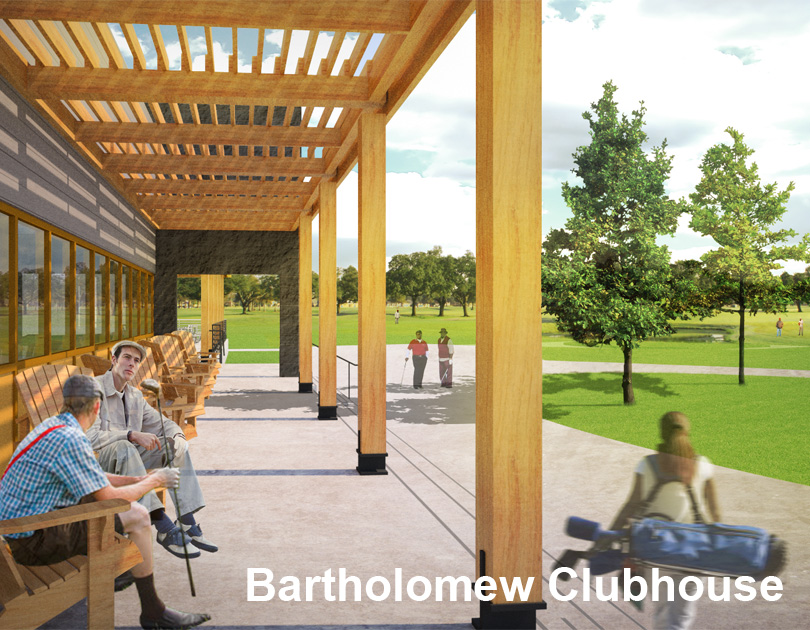

|  |
Bartholomew Golf Course plays an important role in the history of golf, being the first course designed, financed, and constructed by an African American golf course designer.
After being flooded during Hurricane Katrina, the old facility was demolished to make way for a modernized clubhouse and cart storage building. The new clubhouse contains additional spaces for public gathering, reestablishing it as an important location within the Pontchartrain Park neighborhood.
The design echoes the 1960's modernism found throughout Pontchartrain Park. Two perpendicular stone-clad walls formalize the circulation from the parking lot to the golf course, and become the components to which the programs are 'attached'.
Location |
New Orleans, LA |
Year |
Designed 2012-13, Completed 2014 |
Type |
New Construction |
Team |
Perez, APC |
Program |
Golf clubhouse & cart storage building |